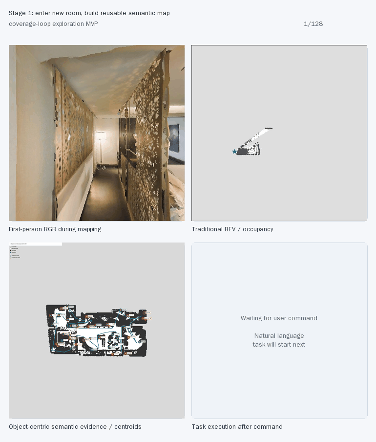

RSC-Nav MVP Demo: 先建语义地图，再执行自然语言任务
MVP 叙事：机器人初入环境时先用 coverage-loop 遍历策略构建 semantic BEV / object memory。后续兴趣驱动探索策略会替代这个固定遍历；当前先用它验证“语义地图可复用后再接任务规划和执行”。
Linked GIF: Mapping -> Planning -> Execution

First-person execution video
Natural language command
帮我去客厅餐桌上找个水杯拿回给我
Planner 只能使用当前 semantic map 里的候选 landmark/waypoint。因为当前 MVP map 只有有限语义标签，涉及水杯、餐桌、房间功能等细粒度概念时，API 会把自然语言目标映射到最接近的可执行语义锚点，并保留不确定性。
API / Planner Output
{
"task_plan": [
{
"step": 1,
"intent": "find_water_place",
"target": "lm_m25_gdino_full96_views2_conf035_table_groundingdino_table_083"
}
],
"water_waypoint_id": "wp_auto_lm_m25_gdino_full96_views2_conf035_table_groundingdino_table_083_2",
"owner_waypoint_id": "wp_lm_m25_gdino_full96_views2_conf035_bed_groundingdino_bed_015_2",
"stopover_waypoints": [
"wp_auto_lm_m25_gdino_full96_views2_conf035_table_groundingdino_table_083_2",
"wp_lm_m25_gdino_full96_views2_conf035_bed_groundingdino_bed_015_2"
],
"water_place_reasoning": "The user requested a water cup from the dining table in the living room. The semantic map includes 'table' landmarks, and 'table_083' is the highest-scoring table landmark (confidence 0.496, salience 0.7914). Although explicit cups or water sources are not labeled, tables—especially in living/dining areas—are common places for cups. Thus, this table is the best available proxy for the requested water cup location.",
"reason": "Chose the highest-confidence table waypoint as the most plausible location for a water cup per the user's request; returned to the highest-confidence bed waypoint for the owner."
}
Habitat/Navmesh Execution
| # | Intent | Anchor | Waypoint | Reachable | Geodesic m |
|---|---|---|---|---|---|
| 1 | find_water_place | table | wp_auto_lm_m25_gdino_full96_views2_conf035_table_groundingdino_table_083_2 | yes | 2.5609 |
| 2 | return_to_owner | bed | wp_lm_m25_gdino_full96_views2_conf035_bed_groundingdino_bed_015_2 | yes | 10.4434 |
Artifacts
- semantic_map_then_task_linked.gif
- water_then_owner_bed_first_person.mp4
- demo_execution_trace.json
- demo_planner_request.json
- demo_planner_output.json
{kind=link}
Storyboard metadata: map frames=56, task frames=72, fps=6.